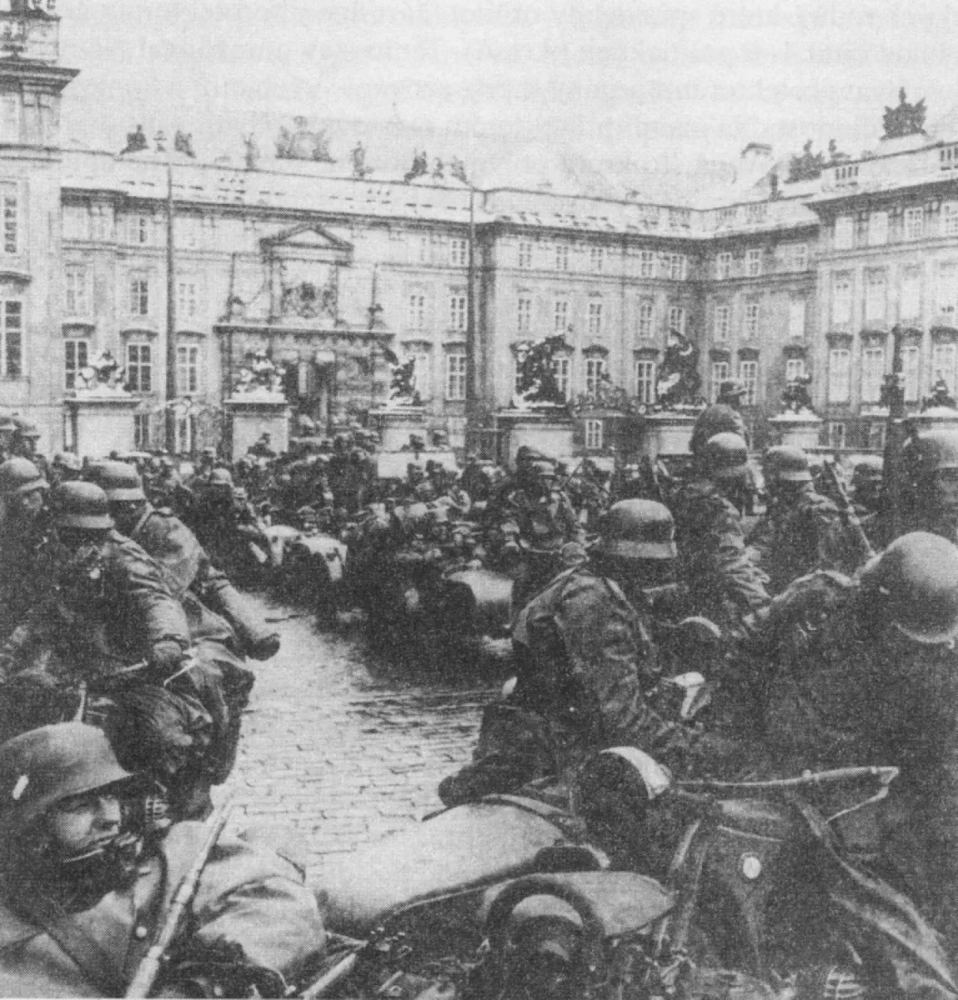
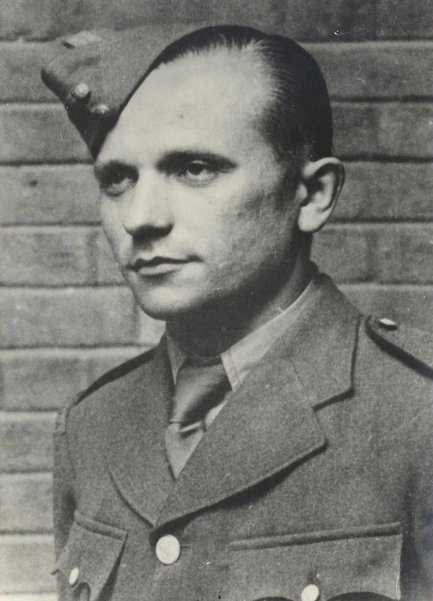
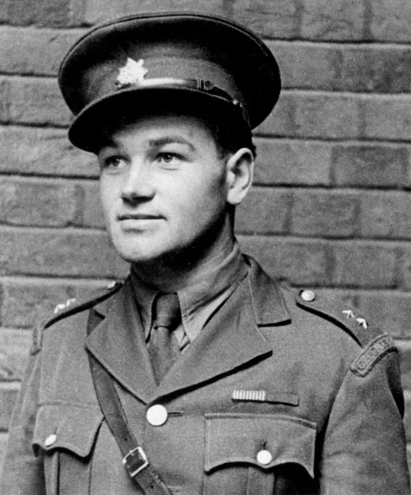
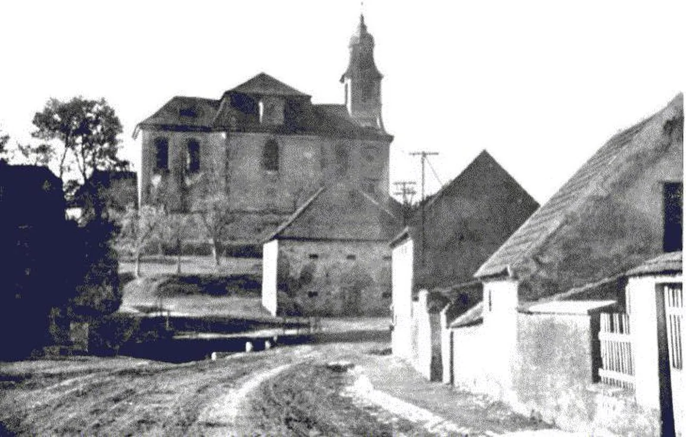
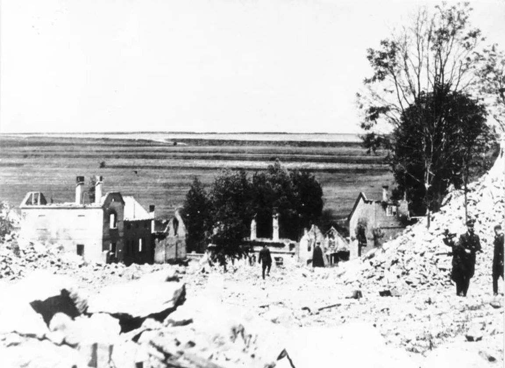
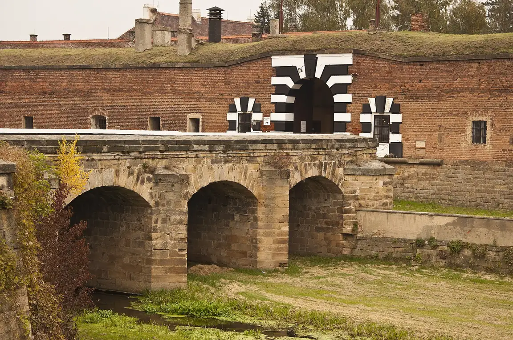
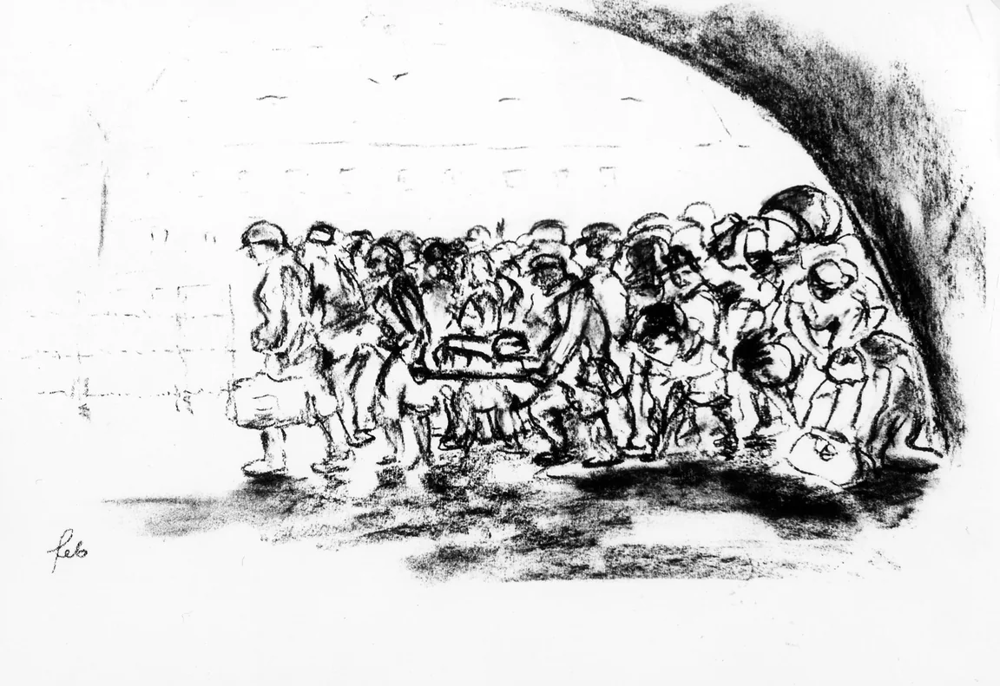
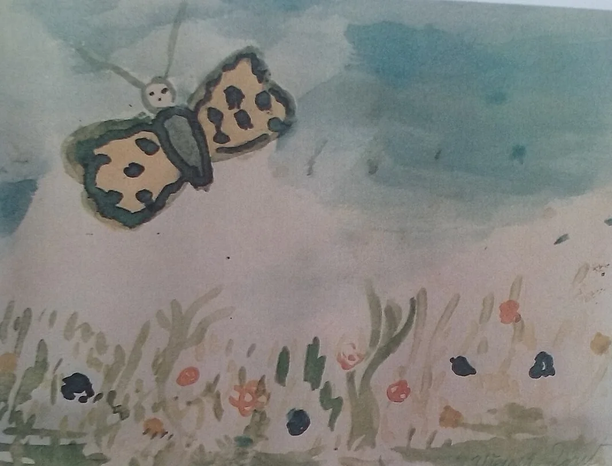
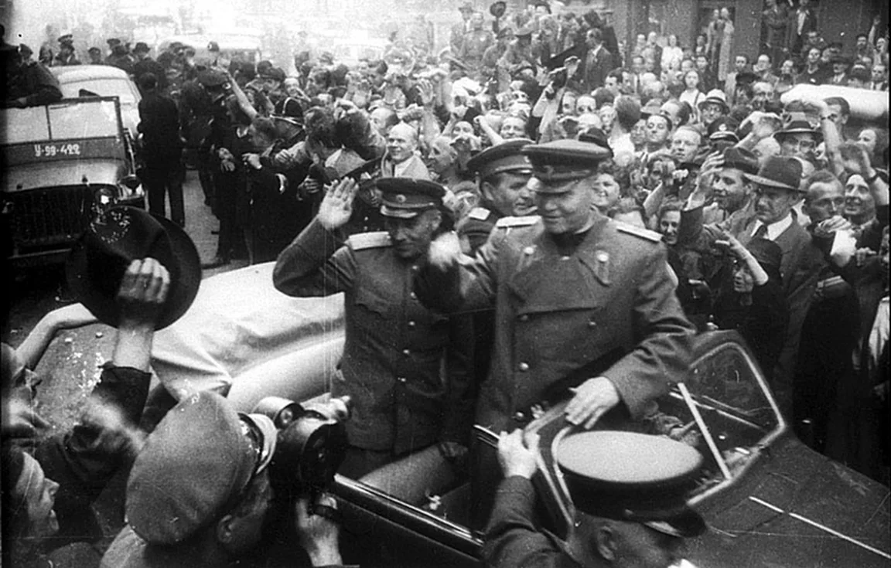

Pro 9. ročník: průběh války, protektorát, odboj a připomínka obětí holokaustu.
1. 9. 1939 útok na Polsko1941 útok na SSSR, Pearl Harbor1942 atentát na Heydricha, Lidice1943 Stalingrad6. 6. 1944 vylodění v Normandii5.–9. 5. 1945 Pražské povstání8. 5. 1945 kapitulace Německa
Protektorát, odboj a holokaust na dobových snímcích
Skutečné fotografie a kresby z let 1939–1945. U každé si polož otázku: co přesně dokládá a proč si to dnes připomínáme?
Okupace

15. března 1939Německá armáda obsadila zbytek Česko-Slovenska, vojáci stáli i na Pražském hradě. Druhý den vznikl Protektorát Čechy a Morava.
Odboj: operace Anthropoid

Jozef GabčíkSlovenský voják československé armády v Británii. Spolu s Janem Kubišem provedl 27. května 1942 v Praze atentát na Reinharda Heydricha.

Jan KubišParašutista z Dolních Vilémovic na Třebíčsku. Úkryt v pražském kostele sv. Cyrila a Metoděje prozradil zrádce; oba zde 18. června 1942 zahynuli v boji s přesilou.
Lidice – před a po

Lidice před válkouObyčejná vesnice u Kladna s kostelem sv. Martina ze 14. století.

Lidice v roce 1942Jako pomstu za atentát nacisté 10. června 1942 zastřelili lidické muže, ženy a děti odvlekli a obec srovnali se zemí.
Terezín

Malá pevnost TerezínZa války věznice gestapa. Ve městě Terezín vedle ní nacisté zřídili ghetto pro Židy, odkud odjížděly transporty do vyhlazovacích táborů.

Příjezd transportuKresbu tajně pořídil vězeň ghetta Ferdinand Bloch. Lidé si směli vzít jen pár zavazadel a nevěděli, co je čeká.

Dětská kresba z ghettaDoris Weiserová (1932–1944) malovala na tajných hodinách výtvarnice Friedl Dicker-Brandeisové. Zahynula v Osvětimi ve dvanácti letech.
Konec války

Květen 1945Pražané vítají Rudou armádu a maršála Koněva. Po Pražském povstání skončila válka v Evropě 8. května 1945.
Válka začala 1. září 1939 napadením Polska a v Evropě skončila 8. května 1945. Nacistický režim během ní systematicky zavraždil přibližně šest milionů Židů a statisíce Romů a dalších pronásledovaných skupin.